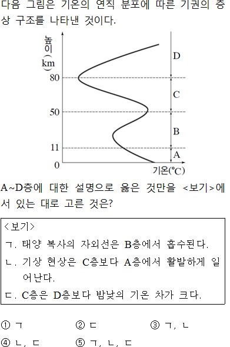
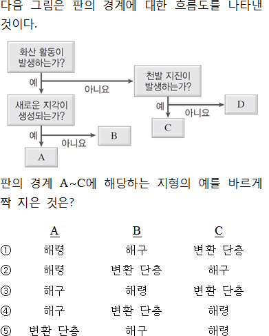
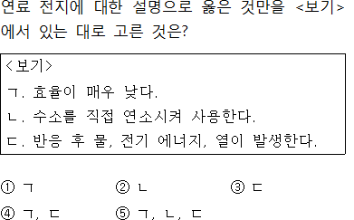

비바샘 문제은행
내신에서 수능 대비 기출 문항까지 비바샘 문제은행으로 간편하게 출제해 보세요.
-
출제하기
-
출제정보 확인
-
시험지 저장
- 1
- 2

- 3
- 4
- 5
- 6
- 7

- 8
- 9
- 10
- 11
- 12
- 13
- 14
- 15

- 16
- 17
- 18

- 19

- 20
- 21

- 22
- 23
- 24
- 25
- 26

- 27
- 28
- 29
- 30
- 31

- 32
- 33

- 34
- 35
- 36

- 37
- 38
- 39
- 40
- 41
- 42
- 43

- 44
- 45
- 46
- 47
- 48
- 49
- 50
